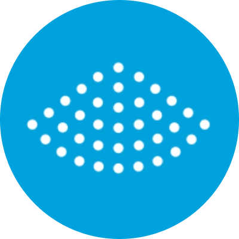
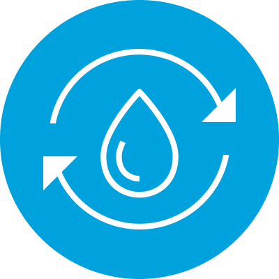

M.C.Dの技術
サスティナブルな取り組み
M.C.Dでは、ジーンズの品質を支える加工技術の開発だけでなく、水・化学物質・エネルギーの使用量削減や、排水を限りなく減らすための技術開発にも取り組んでいます。
秋田の豊かな自然に囲まれた地に工場を構えるからこそ、資源は有限であるという意識を大切にしています。
自然が持つ循環と再生の仕組みに学び、環境への負荷を最小限に抑えながら、未来へつながるモノづくりを追求しています。

オゾン・フィニッシュ
オゾンの酸化・漂白作用でデニムを脱色し、水・薬品・軽石の使用量を削減。
加工時間や汚泥、エネルギーの削減にもつながります。

レーザー加工
レーザーでヒゲやアタリ、ダメージ、グラフィックなどの多彩な表現を実現。
水・薬品・軽石を使わず、高い精度と再現性を実現します。

循環ジェット噴射
使用した水を循環させ、ジェット噴射によって再利用する技術。
水の使用量を98%以上削減し、熱エネルギーの削減にも繋がります。

ミスト噴射
薬剤や染料をミスト状に噴射し、必要な量だけを効率的に使用。
薬剤の使用量を抑えながら、多彩なデニムの表情を生み出します。

ノン・ストーンウォッシュ
軽石の代わりに酸素の力を利用し、自然なアタリを表現。
汚泥の発生を抑え、低温加工によってエネルギーの削減にもつなげます。

水の再利用
UF膜とRO膜で排水を高度にろ過し、再び加工工程などへ循環させるシステム。
工場全体の水使用量・放流水約80%削減を目指し、現在検証を進めています。